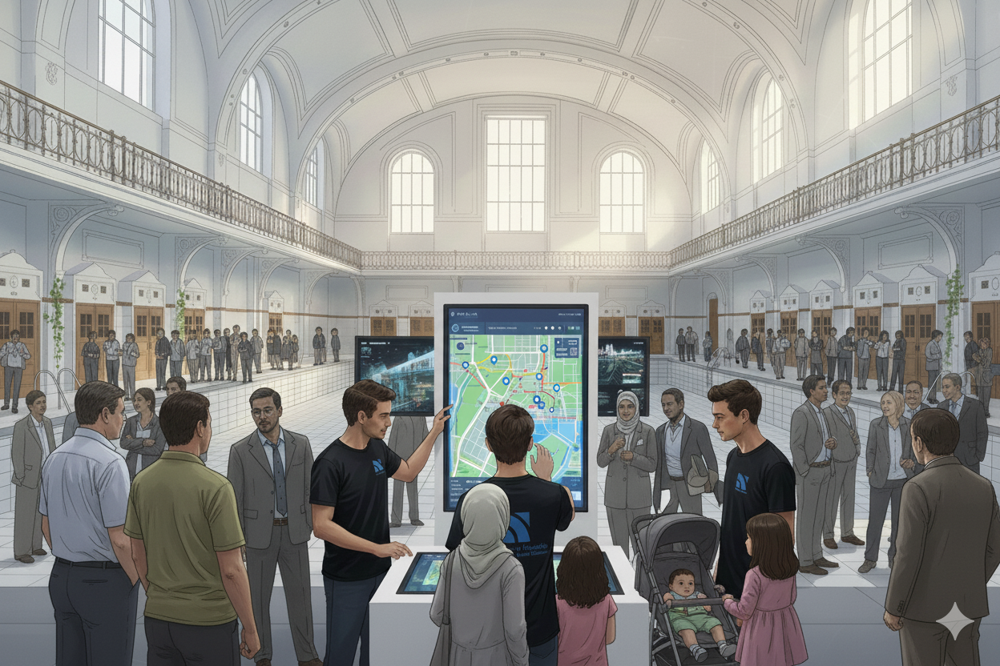
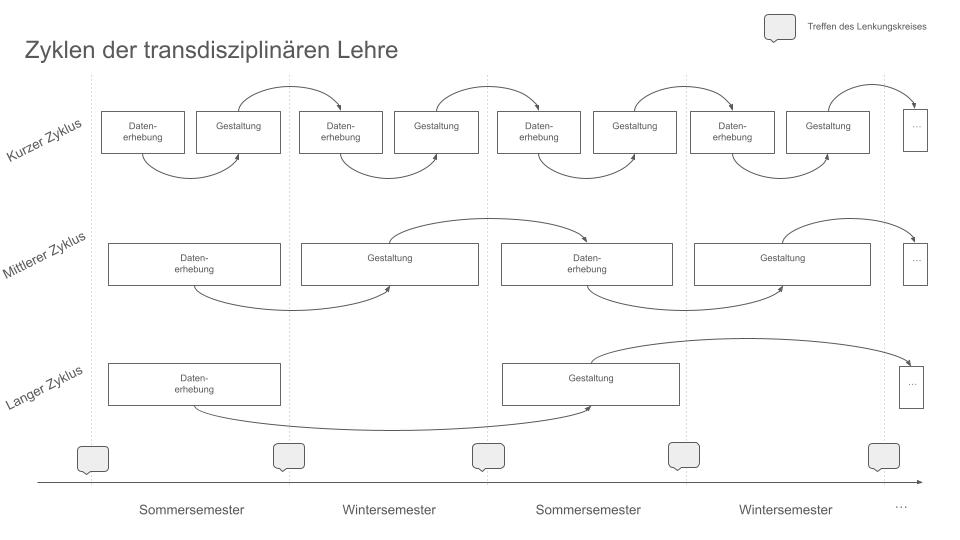

Transdisziplinäre Lehre: Standortsettings und didaktische Zyklen
Auf dieser Seite reflektieren wir, wie transdisziplinäre in die Lebenswelt der Bürger:innen transportiert werden kann. Die Zielsetzung einen Dialog mit Bürger:innen zu finden, die keinen Zugang zu Hochschule und Wissenschaft haben bzw. eine Hochschule keinen Zugang zu diesen Bürger:innen hat.
Dafür setzen wir auf ein didaktisches Konzept für die dialogbasierte kollaborative Wissensproduktion und Vermittlung, welches (1) transdisziplinären Projekte und Formate, die an (2) hochschul- und wissenschaftsfernen Orten des öffentlichen Lebens, im Austausch mit der Gesellschaft und mit Hilfe (3) mobiler Medien durchgeführt werden sowie (4) die Integration dieser Aktivitäten in das Curriculum umfasst.
Auf dieser Website werden Gedanken und deren bildliche Darstellung zur geographischen Setting geteilt sowie Vorgehensweise zur zyklischen Einbindung der transdisziplinären Lehre in der Curriculum und die Hochschularbeit.
Medien
Wir denken in einem mehrstufigen Medienkonzept, welches die systemischen Aufgaben der Hochschule auf verschiedenen, adaptiven Kanälen in die Lebenswelt der Bürger:innen überträgt.
Der Science Truck ist das zentrale und priorisierte Medium des Gedankengangs: Er verlegt Hochschule sichtbar in den öffentlichen Raum und wird gezielt an Orten des gesellschaftlichen Lebens (z. B. Stadtfeste, Fußballstadien, Wochenmärkte) eingesetzt. Inhalte mit unmittelbarem Gesellschaftsbezug werden im Truck interaktiv und dialogorientiert aufbereitet. In zweiter Linie denken wir an einen Popup-Stand, der für Settings mit weniger Platz denkbar ist.
Die vier folgenden Bilder sind mit Google Gemini (Nano Banana) generiert worden und sind als Beispiel zu verstehen.
Schuldigitalisierung im Science Truck an einem Bildungshaus
In dieser Darstellung wird das Thema der Schuldigitalisierung aufgenommen; Studierende führen einen Bürgerdialog mit Bürger:innen zum Thema. Denkbar wäre dies z.B. neu etablierten Haus der Bildung in Krefeld (https://hdb-krefeld.de/).
Mobilität im ÖPNV im Science Truck an einem Volksfest
Der Science Truck lässt sich gut mit anderen Ausstellungsmöglichkeiten kombinieren. In diesem Beispiel zur ÖPNV-Mobilität könnte ein Bus als weiterer Dialograum genutzt werden. Als Kulisse ist hier die halbjährliche Kirmes in Krefeld auf dem Sprödentalplatz dargestellt; hier trifft sich eine Querschnitt der Gesellschaft; aufgrund von Parkplatznot werden viele Personen für ÖPNV-Mobilität sensibilisiert sein.

Mobilität im ÖPNV am Popup-Stand in einem Entwicklungsprojekt
Ein weiteres Setting für ein Mobilitätsthema könnte das Krefelder Stadtbad sein, welches ein preisgekrönter Ort für gemeinwesenorientierte Stadtentwicklung ist, siehe https://freischwimmer-krefeld.de/.
In diesem Setting ist der Science Trunk nicht denkbar; hier würde der Popup-Stand genutzt werden.
Ingenieurstechnik auf historisches Kulisse
In diesem Bild sind technik-lastige Anwendungfälle dargestellt, die vor der Kulisse der Burg Linn in den Dialog gebracht werden. Eine sinnvolle Situation ist bspw. der jährlich stattfindende, überregional wirkende Flachsmarkt (https://www.flachsmarkt.de/).
Integration in das Curriculum
Transdisziplinäre Lehrprojekte zeichnen sich insbesondere dadurch aus, dass komplexe, gesellschaftlich relevante Fragestellungen bearbeitet werden, außerhochschulischer Akteur:innen aktiv in den Prozess der Wissensproduktion integriert und Teil eines dialogischen Prozesses sind. In unserem Projekt werden Themen mit und in der Gesellschaft ermittelt und gemeinsam mit den Fachdisziplinen zu komplexen gesellschaftsrelevanten Aufgabenstellungen weiterentwickelt. Aus diesen Aufgabenstellungen werden Studierendenprojekte abgeleitet, die im Rahmen der Studienmodule bearbeitet werden.

Zyklen der transdisziplinären Lehre
Wir unterscheiden dabei zwischen datenerhebenden und gestaltenden Formate, die immer abwechselnd stattfinden. Favorisiert soll dies in kurzen Zyklen stattfinden (Datenerhebung am Anfang des Semesters, Gestaltung ab Mitte des Semesters); kann aber auch in mittleren (Datenerhebung im Sommer, Gestaltung in Winter) oder langen Zyklen (Erhebung z.B. im Sommersemester 2026, Gestaltung im Sommersemester 2027) umgesetzt werden.
Organisatorische Einordnung der zentralen Datenbanken und deren Nutzung durch dezentrale Fachbereiche
Zur oberen Hälfte der Abbildung: Die Gesellschaft, in aller Heterogenität, interagiert mit der Hochschule. Wir gestalten Dialogstarter, d.h. Situationen, in denen Bürger:innen und Hochschulvertreter:innen in den Dialog starten können. Dies kann direkt über die Fachbereich gesehen; dies ist i.d.R. disziplingesteuert. Ein anderer, für neue Dialoge, wichtigerer Weg ist ein Dialog, der problemgetrieben gestartet ist und nicht direkt in einer akademischen Disziplin zugeordnet ist. Hier gestaltet das Ressort "Studium und Lehre" eine sinnvolle Lehrsituationen mit einem oder mehreren Fachbereichen.
Zur unteren Hälfte der Abbildung: Die Hochschule gestaltet Lehre, sowohl fachbereichsabhängig in Curricula, wie auch fachbereichsunabhängig in Schlüsselqualifikationen oder der Campuswoche, in denen transdisziplinäre Kollaboration stattfindet. Die Studierenden nehmen hier eine Doppelrolle ein: Als Teil der Gesellschaft (siehe die Akademikerhüte bei einigen Personen in der Gesellschaft) und Teil der Hochschule.
Diese Website wurde erstellt und kuratiert von Alexander Rachmann, Hendrik Poschmann, Benedict Janssen, Andreas Kitzig, Alexandra Eßer-Lüghausen, Lea Bönisch und Pia Annas..